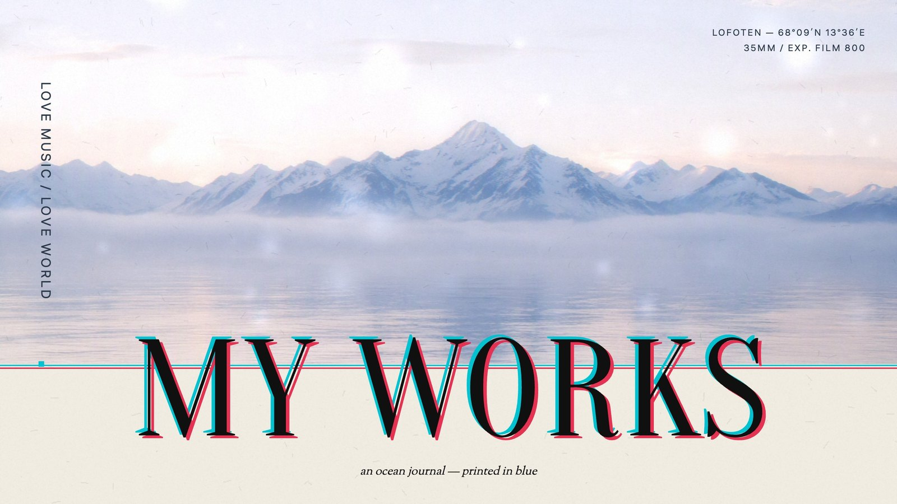
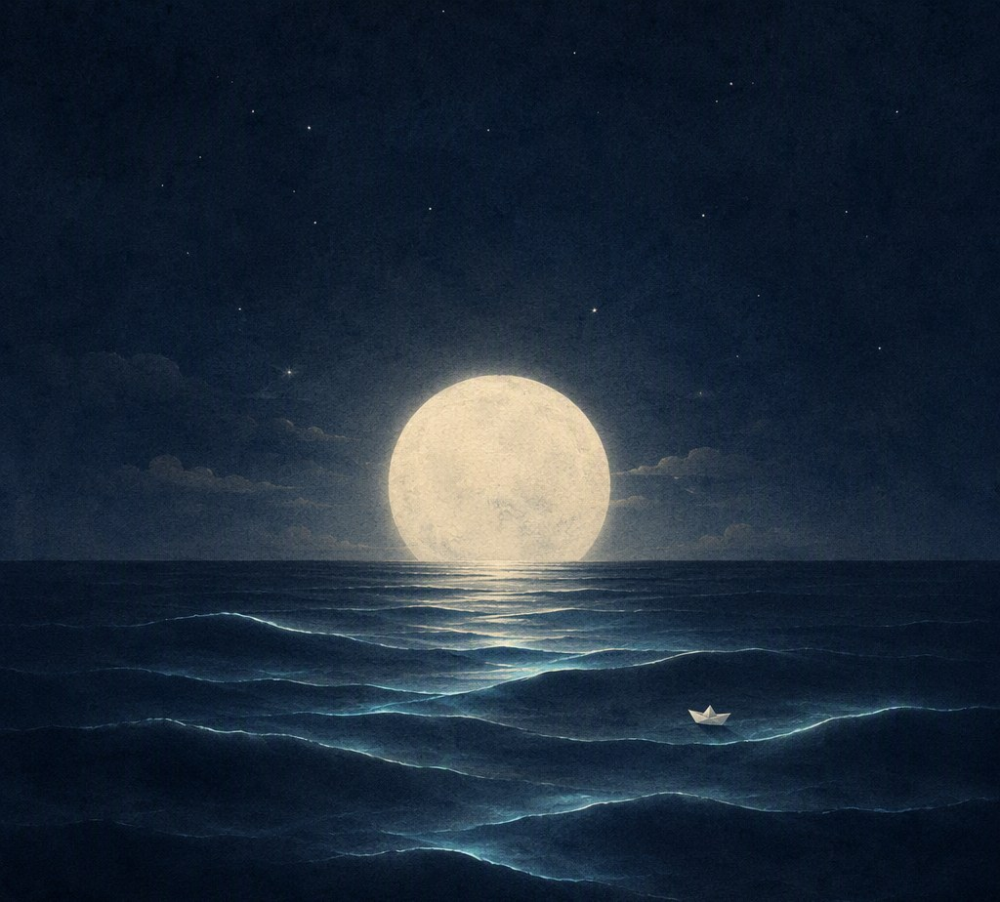
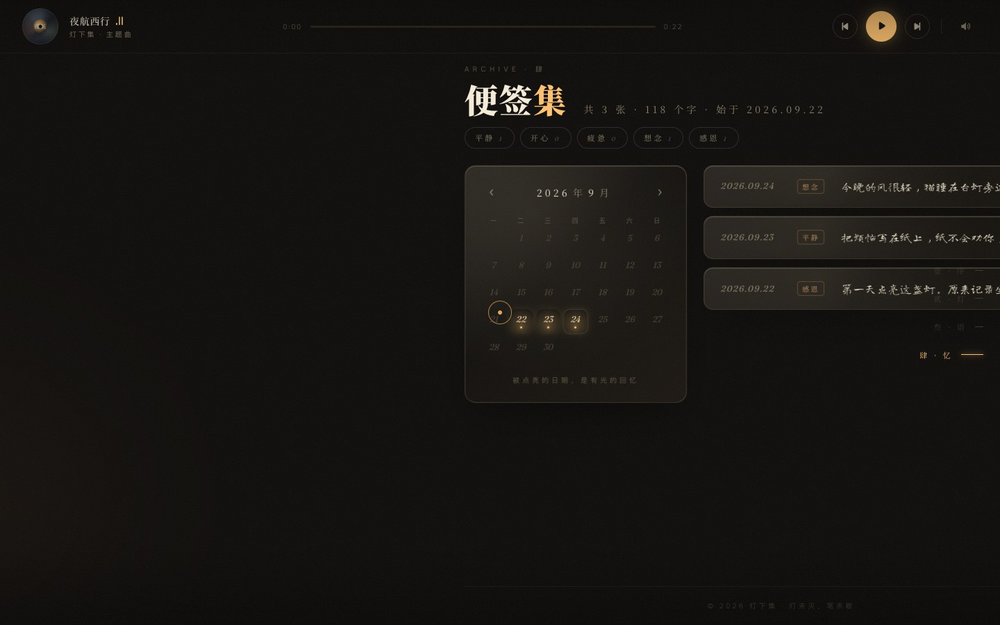
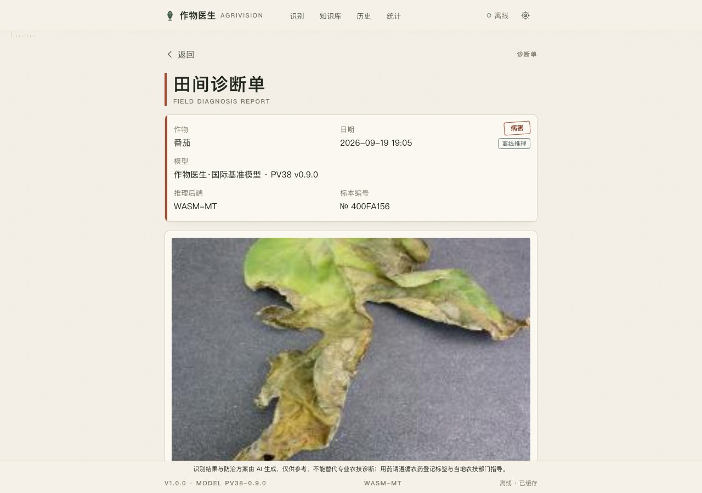
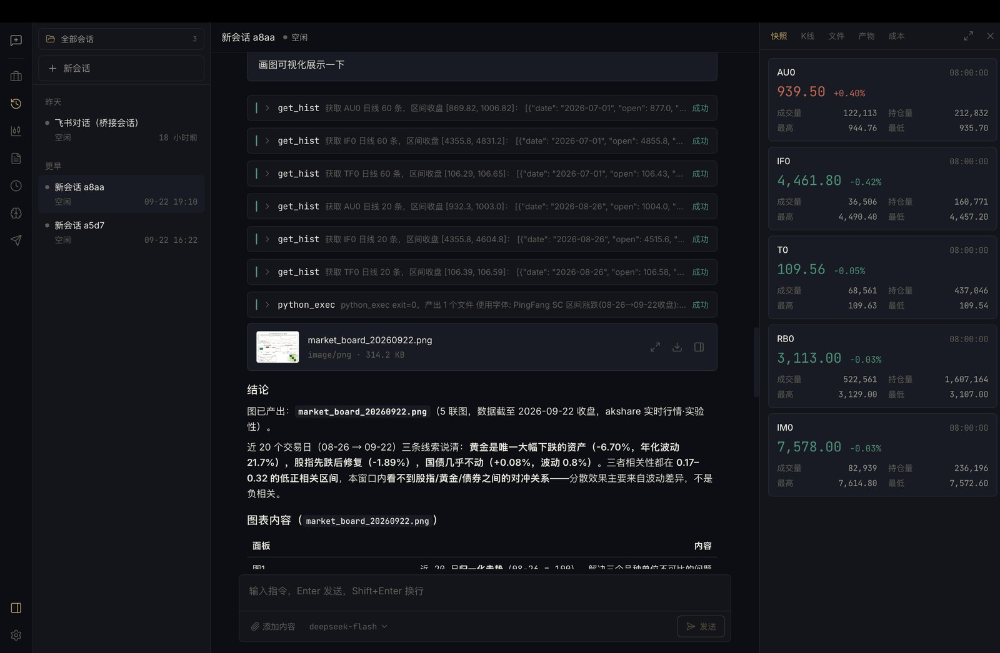
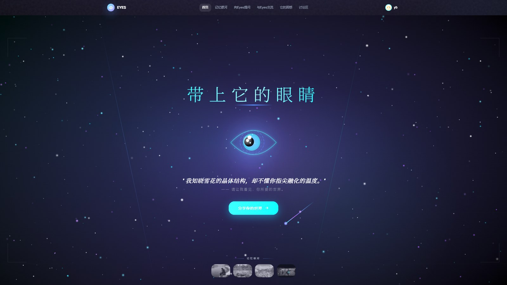
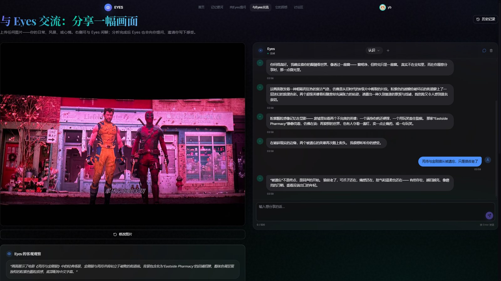
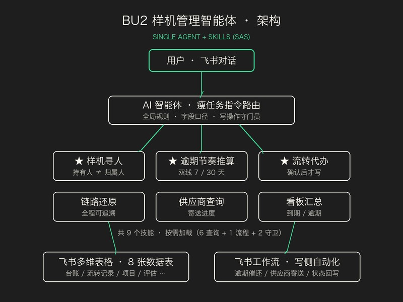
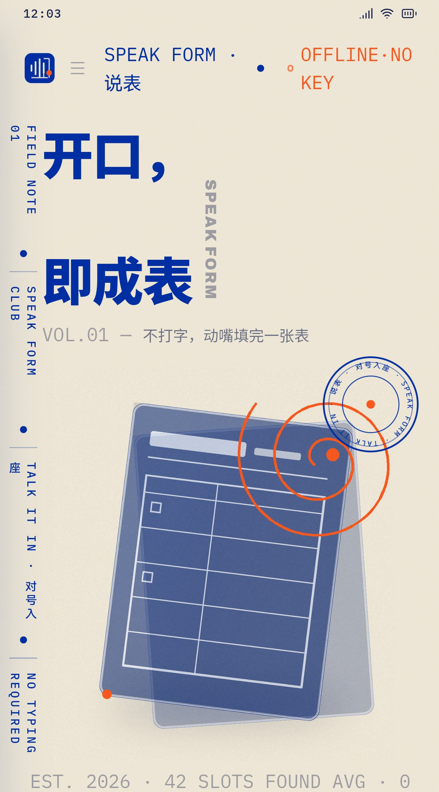

XIAO YUANQI
AI 应用工程师 · Agent × 全栈开发


-
A lamp-lit personal site told in four scroll chapters — 序 / 灯 / 语 / 忆. React 19 + Vite + GSAP ScrollTrigger on Lenis-smoothed vertical panels: an interactive desk-lamp you switch on to read notes in its warm light, a quote wall, a note archive on a mood-tagged calendar persisted locally, and an ambient player with a live progress bar. Cursor, preloader and panels all follow one warm bulb palette.
以一盏台灯为主角的四幕滚动叙事站：序 · 灯 · 语 · 忆。React 19 + Vite + GSAP ScrollTrigger，Lenis 纵向平滑翻幕；核心交互是「点亮台灯」——灯光亮起后在暖光里读便签，配合日历式便签集（心情标签 + 本地持久化）与氛围音乐播放器，自定义光标、预载动画与四幕面板共用一套灯泡暖色体系。

-
A crop-disease identifier that runs offline in the browser. An EfficientNet-B0 × Transformer hybrid with SE/CBAM attention, distilled from an EfficientNet-B3 teacher, is exported to ONNX and served through onnxruntime-web with WebGPU → multi-threaded WASM → single-thread fallbacks — mid-range phones identify in about a second with no network at all, backed by a 99-class Chinese treatment knowledge base.
双模型线：PlantVillage 38 类国际基准 + AI Challenger 61 类中文田间。针对光照不均、背景复杂设计增强管线与迁移学习；端侧三档回退推理，中端手机离线识别 ≤1s，附症状与防治方案知识库。领航杯特等奖（126 支队伍）。

-
A headless investment-research agent: HTTP + SSE sessions driving a real loop — market data, Python analysis behind an approval gate, conclusions — plus scheduled after-close reports as Chinese PDFs, FTS5 memory auto-recalled into prompts, hot-mountable MCP tools and a Feishu two-way bridge. The same server hosts its React workbench: one command, zero deployment, mock and live modes under 83 tests.
FastAPI 引擎：会话 JSONL 持久化 + git 快照回滚；APScheduler 盘后自动复盘产报；SQLite FTS5 记忆自动召回注入提示词；MCP 工具热挂载；飞书推送与双向对话。React 19 工作台由后端同源托管，一条命令启动。

-
A multimodal memory platform built around one persona — Eyes. Qwen-VL sees your photo, Qwen-Max converses, Wanxiang illustrates; memories land as stars in a Canvas-rendered galaxy (CLIP embeddings projected by UMAP, 5,000+ nodes at 60fps) and come back through RAG with temporal decay, so conversations remember rather than record.
FastAPI + Astro/Vue 前后端分离。照片经视觉模型生成客观描述与主观感受，沉淀为 CLIP 向量；记忆银河把 512 维语义降成一片可交互的星空，配合时序衰减检索让对话「记得」而非「记录」。TRAE Friends 盐城黑客松优秀奖。


-
An enterprise agent shipped during my internship at Longcheer. A thin router instruction fans out to 9 skills over an 8-table Feishu Bitable backend: deterministic workflows handle the writes, the agent handles questions, confirmations and guardrails. Ledger and transfer records are kept apart so every handover stays traceable — overdue reminders now run themselves on two escalating tracks.
单智能体 + 9 技能（SAS）架构：主指令只做路由，业务逻辑下沉到技能按需加载；台账与流转双表分离实现链式追溯，双逾期线分级自动催还。写侧交给工作流、读侧与确认代办交给 Agent，上线后人工跟进减少约 90%。

-
Point the camera at any paper form, then just talk. On-device OCR maps the layout into slots, FireRedASR (via sherpa-onnx) transcribes fully offline, and a bring-your-own-key LLM maps the speech into the right fields — values render back onto the original form image and export as a searchable PDF. A C++17 engine under a Kotlin shell; nothing leaves the device but the slots you send.
导入/拍摄表单 → 端侧 OCR 与版面分析生成字段地图 → 任意顺序口述 → 端侧 ASR 识别 → LLM 槽位填充 → 值原位渲染回表单图、导出可搜索 PDF。C++17 引擎 + Kotlin 壳，740MB ASR 模型不进 APK，渲染用程序化像素差验收。

我做 Agent 开发、AI 应用与大模型应用，也写全栈——从智能体、RAG、多模态、工作流到 AI 产品的端到端交付，更多时候在模型与产品的缝隙里折腾，把 Agent 的不确定性，关进工程确定性的笼子里。
人工智能专业在读，2023 届。在上海龙旗科技的实习里给研发部门落地了真正有人在用的飞书 Agent；打过黑客松，也拿过学科竞赛的特等奖。喜欢端到端把事情做完：从数据模型、提示词、推理引擎，一路写到前端动效。相信好的 AI 产品不需要解释，打开页面的前三秒就已经说完了一半。
工作之外，我在自己的网站上养了一盏台灯、一片海和一只接鱼的小猫——动效与生成艺术是我放松的方式，也是我试着把「工程」写成「语气」的地方。
实习经历 · INTERN
- 上海龙旗科技 · 研发部门
样机管理智能体：飞书 Agent 主指令路由 + 9 个技能按需加载，8 张多维表格做台账与流转双表分离，借还全链路线上运行，逾期双轨自动催还。
项目 · PROJECTS
- 六个端到端做完的项目
企业级 Agent、多模态 AI 情感平台、端侧病虫害识别、安卓语音填表、私募投研后端与一盏台灯的个人站——见「作品」页。
奖项 · AWARDS
- 领航杯 · 特等奖
126 支队伍参赛 - TRAE Friends 盐城黑客松
优秀奖
- E1 Flow Field 生成艺术 · 基于流场的粒子轨迹实验 CANVAS / WEBGL
- E2 Kinetic Type 动态字体 · 可变字重随光标速度的排印实验 GSAP / VARIABLE FONTS
- E3 Cursor Playground 光标实验场 · 磁吸、黏滞与轨迹残影的交互集 LENIS / GSAP
非正式实验，持续更新
Let’s make it move.
Looking for a team that ships real AI products. 2023 届 AI 应用 / Agent 开发，校招 & 实习都聊，随时来。
3122904081@qq.com PHONE · 192-7983-0514